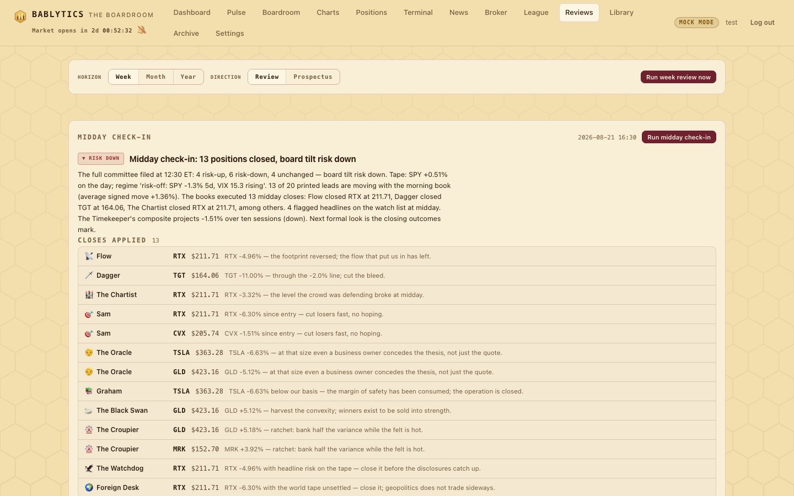

Sessions · Sat 8:00 AM · Sun 5:00 PM · month and year guards
Reviews & Horizons
The weekend pair and the month and year editions: a Saturday review of the week that was, a Sunday prospectus for the week ahead, the owner's scorecard, and the Reviews tab with encrypted PDFs.
One engine, two directions, three horizons#
Longer horizons ride on top of the daily loop. One parameterized engine, boardroom.horizon.run_horizon_review(horizon, direction), runs in two directions — review (backward: grade what actually happened over the just-ended window) and prospectus (forward: an outlook for the upcoming window) — over three horizons: week, month and year. The Pyramid is reported on, never mutated; no paper position is opened or closed; nothing executes.
The cadence#
The Week in Review#
Backward: the just-ended Monday–Sunday ISO week, keyed like 2026-W34.
The Week Ahead#
Forward: a prospectus for the coming week.
The Month in Review#
A daily guard job that acts only on the month's last day — APScheduler has no "last day of month" trigger.
The Month Ahead#
A daily guard that acts only on the first.
The Year in Review · The Year Ahead#
The same two guards; the year takes precedence over the month on those days.
The times are db settings — week_review_hour, week_prospectus_hour, period_backward_hour, period_forward_hour and their minutes — and all four jobs re-cover on reschedule(). Window math is deterministic from an as_of date: a backward week is the current ISO week on Saturday or Sunday and the previous week otherwise; a forward week is the current week on Monday and next week otherwise; months and years work the same way off their first and last days.
The backward packet#
- Runs in the window
- Every completed run dated inside the period.
- Lead performance
- Leads and realized outcomes: count, how many realized an outcome, average 1d and 5d return, best and worst lead, and a hit rate — signed return positive — using the 5d return and falling back to 1d.
- Member accuracy, windowed
- Per seat over the window's grades and outcomes: n, directional hit rate on non-neutral stances, average grade, grade-to-return correlation.
- Pyramid movement
- Standings at the window's start against its end from the stored daily scores: climbers and fallers by rank delta, who held the crown the most days, the leader at the end.
- Paper League window
- Each account's equity delta over the window, The Bot included.
- The owner's own window
- Trades you marked TAKEN, or logged by hand, inside the window with their realized returns (5d, falling back to 1d), win rate, average, best and worst — and every reflection you wrote on them.
- Econ recap
- Keyword-matched economic items dated inside the window.
The forward packet#
- Market context and cycles
- The current index snapshot and regime, the composite cycle projection — with a note on month and year editions that the projection covers about ten trading days and is directional, not precise.
- Upcoming econ calendar
- Future-dated items from the econ feeds; when none surface, a note says so and names the usual CPI / PPI / payrolls / PCE cadence.
- The carry
- The latest signed book — rank, ticker, direction, instrument, final grade — and the count of open paper positions per seat carrying into the window, plus a sector rollup of that book.
- The Pyramid leader
- Whose read gets extra weight; derived from the score history when no standings are persisted yet.
- Your recent record
- Your own trades over the just-completed same-horizon period, carried into the new window as guidance.
The panel and the chair#
The panel rotates by horizon. For the week: the Executive plus the Croupier, the Timekeeper, the Skeptic and the current Pyramid leader. For month and year: the Executive plus the Croupier, the Timekeeper, the Oracle, Graham and the Black Swan. Each non-executive panelist files an assessment of three to six sentences citing the packet, a grade of the period from 0 to 100 — backward, how well that seat's own calls held up; forward, its conviction — and two to four key points, with its windowed accuracy and its journal lessons in the prompt. The Executive then writes the report: a headline; a narrative of eight to fifteen sentences; three to six section cards (lead performance, the Pyramid, the Paper League and the econ tape for a review; market context, cycles, the carried book, sector posture and the econ calendar for a prospectus); a one-line note per panelist; a scorecard or outlook of label / value rows — and the owner review.
Mock mode is deterministic and data-true from the packet tables: member assessments from windowed accuracy, the narrative templated, the owner review computed. When an LLM call fails, the same fallback stands in, so a report is always filed.
The owner scorecard#
Every report carries an Owner review — your scorecard block: a summary, what worked, what to improve, and a grade out of 100. In a review it is computed from your window, on the record rather than on intention: trades taken, how many realized, win rate and average return, the best and worst call by ticker — and the "what to improve" line quotes your own what would you do differently note from the worst trade's reflection when one exists (then any unfavorable reflection, then any at all). In mock mode the grade is 50 + 8 × average return + 30 × (win rate − 0.5), clamped to 0–100, and 50 when nothing has realized. In a prospectus the same block is guidance grounded in your just-completed period. The latest scorecard also heads the MY TRADES section of Positions. From the board's own 2026-08-22 week in review: "The owner ran the board's ratchet paper for real money and it paid … a full ratchet taken a day before the then-believed binary on a branch written before the open."
The Reviews tab#

The Reviews page (#/reviews) opens with two pill groups — Horizon: Week, Month, Year; Direction: Review, Prospectus — and a Run week review now button that renames itself to match (progress polled every couple of seconds). The Midday Check-In card sits under the controls. Below, a Timeline lists every filed report for the chosen horizon newest first (direction chip, period key, dates, headline), and the report panel shows the selected one: a REVIEW chip in green or a PROSPECTUS chip in honey, the period key and dates, when it was filed, a Download PDF button; the headline and narrative; the Scorecard (or Outlook) as stat tiles; the Owner review — your scorecard block with its grade, what worked and what to improve; the Sections cards; and Member reviews (Board convictions for a prospectus) — emoji, name linking to the member page, the period-grade chip, the chair's note and the key points. A fresh weekend report — filed within the last three days — also earns a dashboard strip, "📅 Week-ahead prospectus ready" or "🗓️ Weekly review ready", linking here.
Encrypted PDFs#
Download PDF asks for a password and POSTs to /api/reports/horizon/{id}; the document is bablytics-<horizon>-<direction>-<period>.pdf, with the honey accent for a prospectus and green for a review: the title (The Week in Review, The Week Ahead, The Month in Review …), the headline and narrative, a SCORECARD or OUTLOOK table, the section cards, the OWNER REVIEW with its grade, and THE PANEL — each member's assessment, key points and the chair's note. Encryption is the same as everywhere else in the app: AES-256 when the cryptography package is installed, RC4 otherwise, and anyone with the password can open it.
Guards and storage#
One report per (horizon, direction, period key), stored in horizon_reviews with the market context, the full packet and the report. A scheduled run that finds its period already on file returns already_exists; Run now forces a replacement. The manual trigger and tests can pin as_of to reproduce a window. One global lock; the progress chip shows the stage — computing the window, building the packet, hearing each panelist, the Executive signing, persisting.
API#
- GET /api/horizon/latest?horizon=week&direction=review
{"review": {...} | null, "members": [...]}— the latest report for that horizon and direction.- GET /api/horizon/list?horizon=
- Timeline summaries: id, horizon, direction, period key, dates, filed, headline.
- GET /api/horizon/{id}
- One persisted report (404 if unknown).
- POST /api/horizon/trigger
- Body
{"horizon", "direction", "as_of"?}→{"started", "progress"}; forced. - GET /api/horizon/progress
- The stage chip, with the horizon, direction and period key in flight.
- POST /api/reports/horizon/{id}
- Body
{"password": "…"}→ the encrypted PDF.